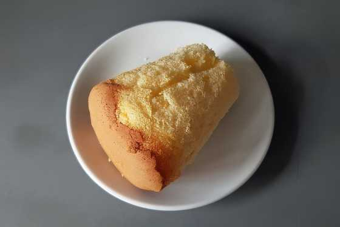
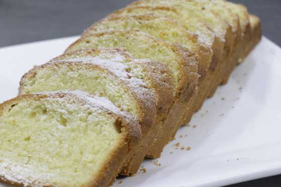
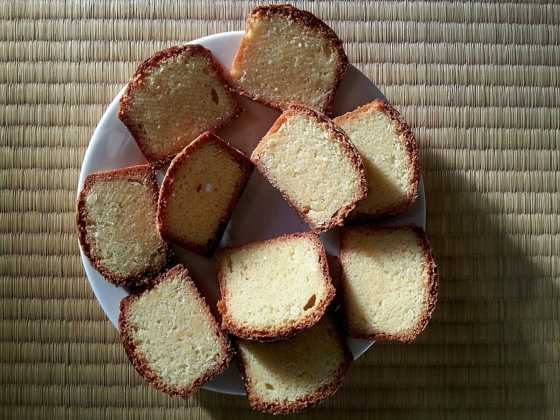
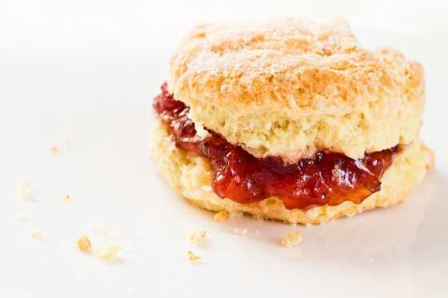
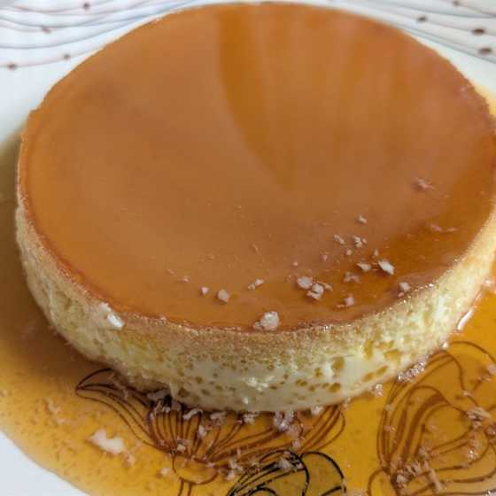
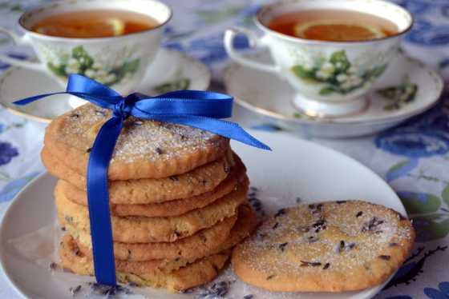
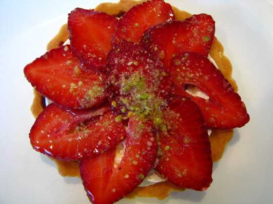
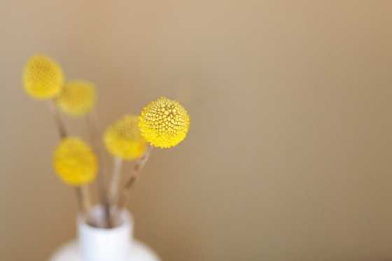
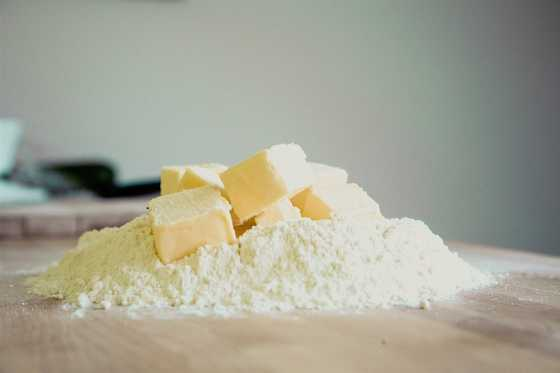
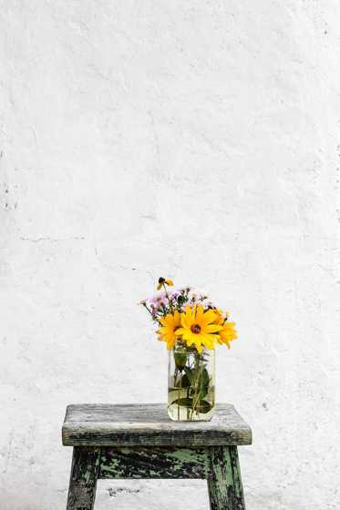

香川県東かがわ市松原
シュクレ シフォン
ふんわり軽い一切れを、お気に入りの日のごほうびに。
※このコンセプト文は制作側の案です。

メニュー
シフォンケーキ専門店。カットシフォンやクリームサンドなど、フレーバーは週替わりと紹介されています。










口コミ
以下は制作側が作成したイメージ例です。実際のお客様の声ではありません。
イメージ例
ふわふわで軽くて、ぺろりと食べられました。友人への手土産にもしたいです。
イメージ例
種類がたくさんあって選ぶのが楽しい時間でした。次はクリームサンドを試したいです。
イメージ例
やさしい甘さで、お茶の時間にぴったりでした。また寄りたいと思います。
お店について
オーナーは学生のころからお菓子づくりが好きで、2011年ごろから香川県さぬき市でケーキの注文を受けていたと紹介されています。2018年に現在の場所でシフォンケーキのお店を開いたとされています(紹介記事による)。
店名の意味などは確認できていないため、ここでは触れていません。

アクセス・店舗情報
- 店名
- シュクレ シフォン
- 住所
- 〒769-2702 香川県東かがわ市松原1299
- 電話
- 準備中
- 営業時間・定休日
- 準備中(営業日が限られるとの情報があります。Instagramでご確認ください)
- @sucre1299
掲載写真はフリー素材によるイメージで、店舗の実際の様子ではありません。他地域で撮影されたものや撮影地が不明なものを含みます。
写真クレジット(縮小・切り抜き等の加工あり)
- images/01.jpg「白い皿にのったシフォンケーキ」 chooyutshing / Public Domain Mark 1.0 (creativecommons.org)
- images/02.jpg「粉糖をかけた焼き菓子のスライス」 Jackson Monichan / CC0 1.0 (creativecommons.org)
- images/03.jpg「切り分けたケーキ」 Douglas Paul Perkins / CC BY 3.0 (creativecommons.org)
- images/04.jpg「ジャムをはさんだ焼き菓子」 Benson Kua / CC BY-SA 2.0 (creativecommons.org)
- images/05.jpg「焼きたての焼き菓子」 Kolforn / CC BY-SA 4.0 (creativecommons.org)
- images/06.jpg「白い皿のプリン」 Zain Abdullah / CC0 1.0 (creativecommons.org)
- images/07.jpg「色とりどりの焼き菓子」 Jeppestown / CC BY-SA 2.0 (creativecommons.org)
- images/08.jpg「リボンで束ねた焼き菓子とカップ」 Turku Gingerbread from Finland / CC BY 2.0 (creativecommons.org)
- images/09.jpg「いちごのタルト」 Kirti Poddar / CC BY 2.0 (creativecommons.org)
- images/10.jpg「小麦粉とバター」 Markus Spiske / CC0 1.0 (creativecommons.org)
- images/11.jpg「黄色い花を生けた花瓶」 NordWood Themes / CC0 1.0 (creativecommons.org)
- images/12.jpg「丸い黄色の花」 Danielle MacInnes / CC0 1.0 (creativecommons.org)